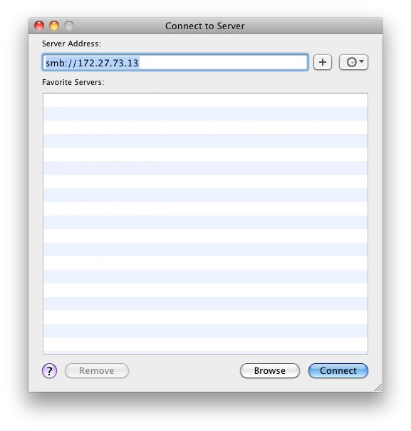
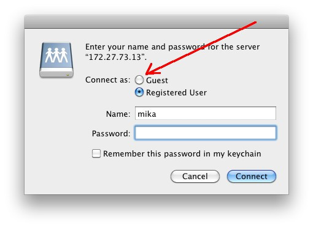
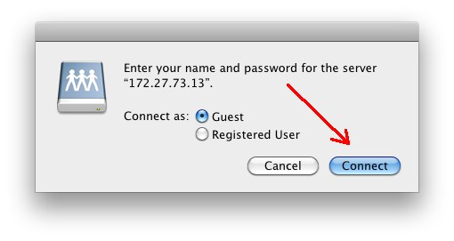
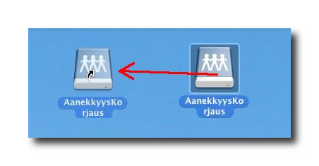
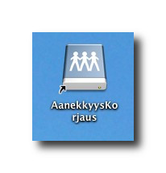

Mounting the server HotFolder on a OS X workstation
First click an empty spot on your desktop, this activates the Finder -
program.
The keyboard shortcut to bring up the "Connect to Server" -
window is cmd + k, so keep cmd pressed
and press k.
Write "smb://your servers ip address" in the prompt and
press "Connect".
Note: the ip - address shown on the picture is just for demonstration, get
the real address for your server from your it - staff.

The next window lets you choose between logging in anonymously or as a
registered user. The network share on the FreeLCS - server is configured to
accept only anonymous logins. So don't write any username or password, just
click "Guest".

Now the window changes and looks like the one below. Click "Connect".

The icon of the mounted server disk appears on the desktop. You can make
mounting as easy as clicking on an icon if you create an alias to the
server.
Hold down alt and cmd - buttons and make
a copy of the server disk icon by dragging it with the mouse.

When you release the mouse and icon looking like the original one appears on
the desktop, the only difference is that the new icon has a curved arrow on
the bottom of the picture. A picture with an arrow like this is an alias and
it is a shortcut to the server disk. Next time you can mount the server disk
just by double clicking on the alias.
